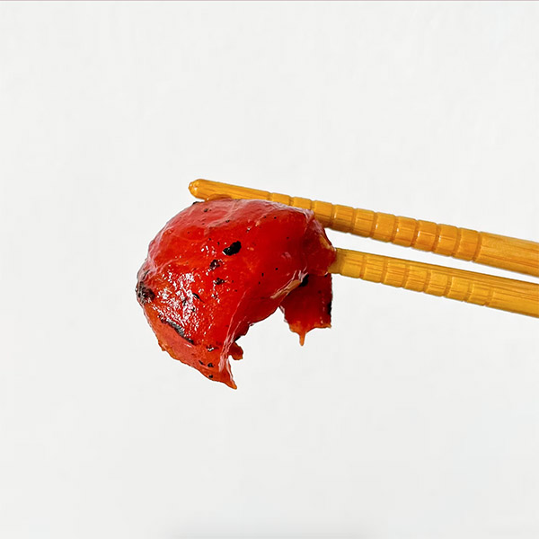

Vegan Tuna
Tuna never tasted better! With just 7 ingredients you can transform your watermelon into tuna for the perfect sashimi, sticky rice, or poke bowl. You are going to enjoy a delicious meatless meal with just an hour of hands-offf baking. This is all it takes to help our planet, no harm any fishies, and make you happy. Hope you try it! It's very tasteful and fun to make. Trust the process.
Ingredients:
- 150gr Watermelon
- ⅓ cup Soy sauce
- 1 tbsp Rice vinegar
- ½ tbsp Sesame seed oil
- ⅓ tbsp Salt
- ⅓ tbsp Minced garlic
- ¼ cup Chopped nori
Steps:
- Preheat the oven to 375ºF or 190ºC.
- Cut the watermelon into 1-inch thick slices. You can cut it into steak-sized pieces or cubes. Remember to cut off and discard the rind.
- In a bowl, baking dish, or a sealable bag, mix together all the ingredients.
- Incorporate the watermelon pieces to the mix, and let it marinade for 15-20 minutes.
- Place the marinaded watermelon in a large baking dish with parchment paper.
- Bake for 45-60 minutes or until the watermelon is soft and has a fishy raw texture when pierced with the fork.
- When ready, serve hot or cold. You may add black sesame seeds on top (optional).
- Enjoy!